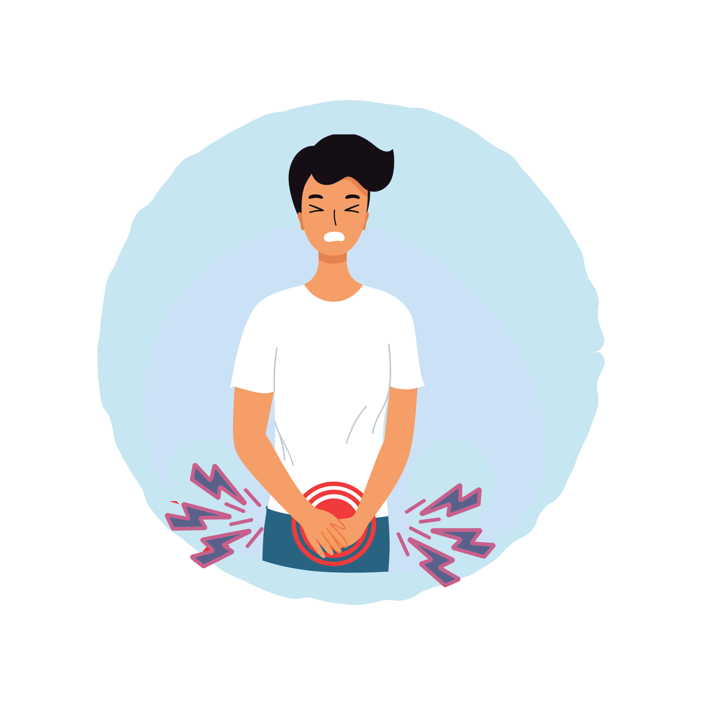
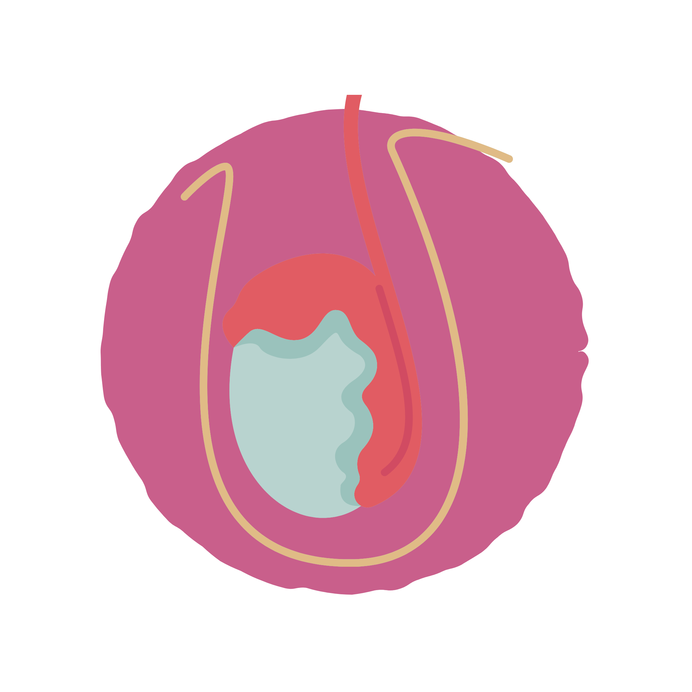
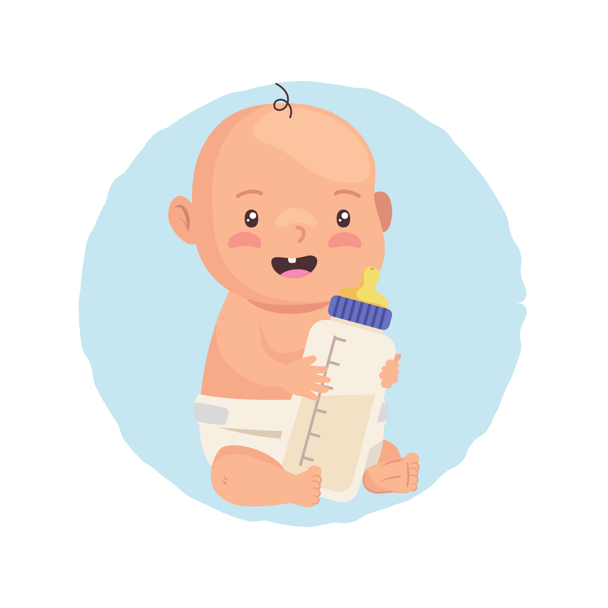
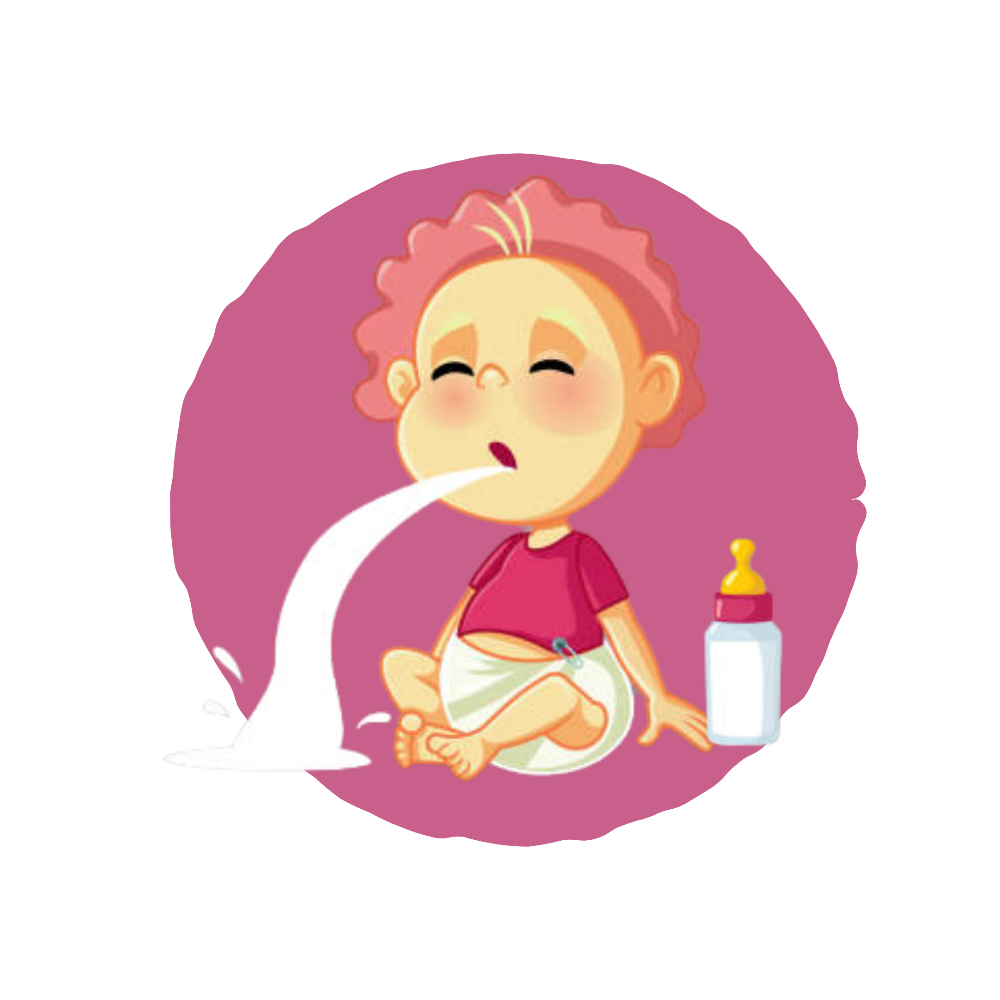
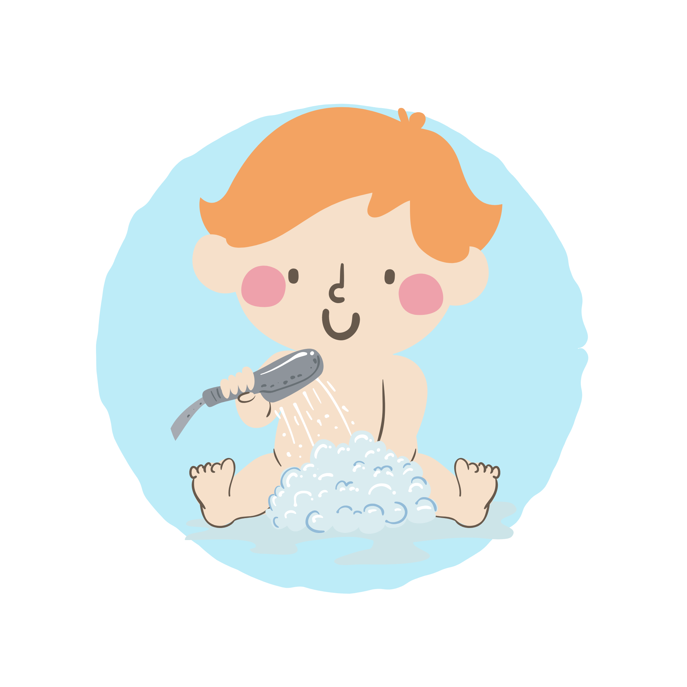
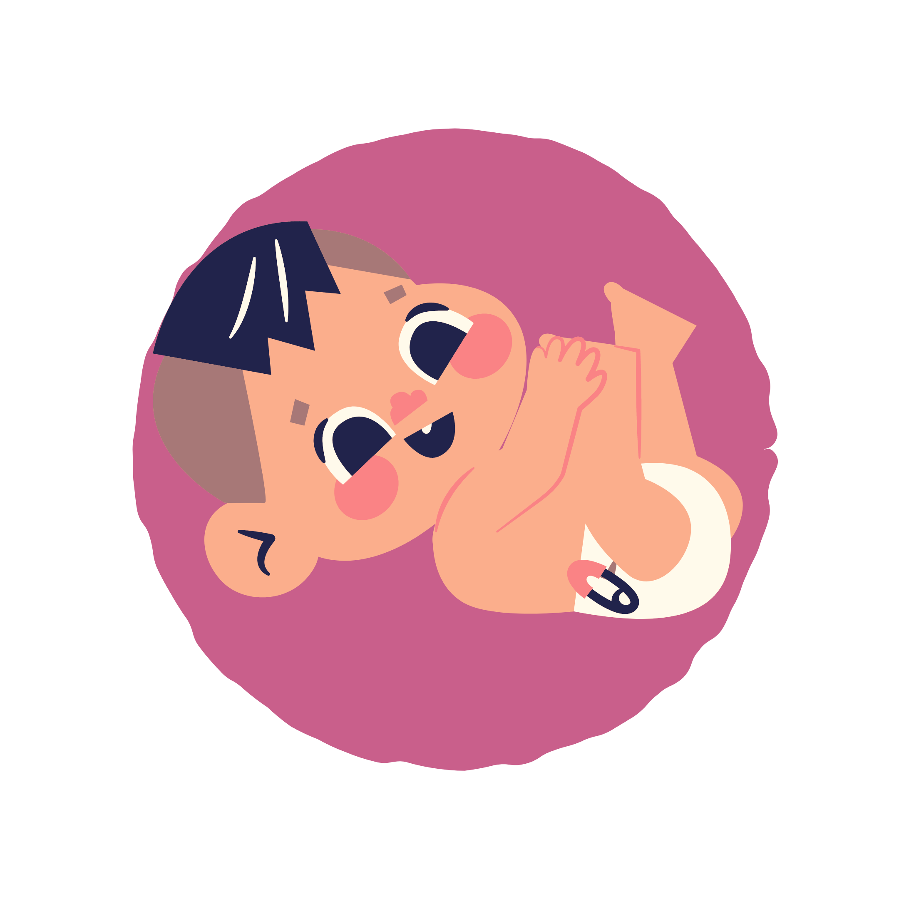
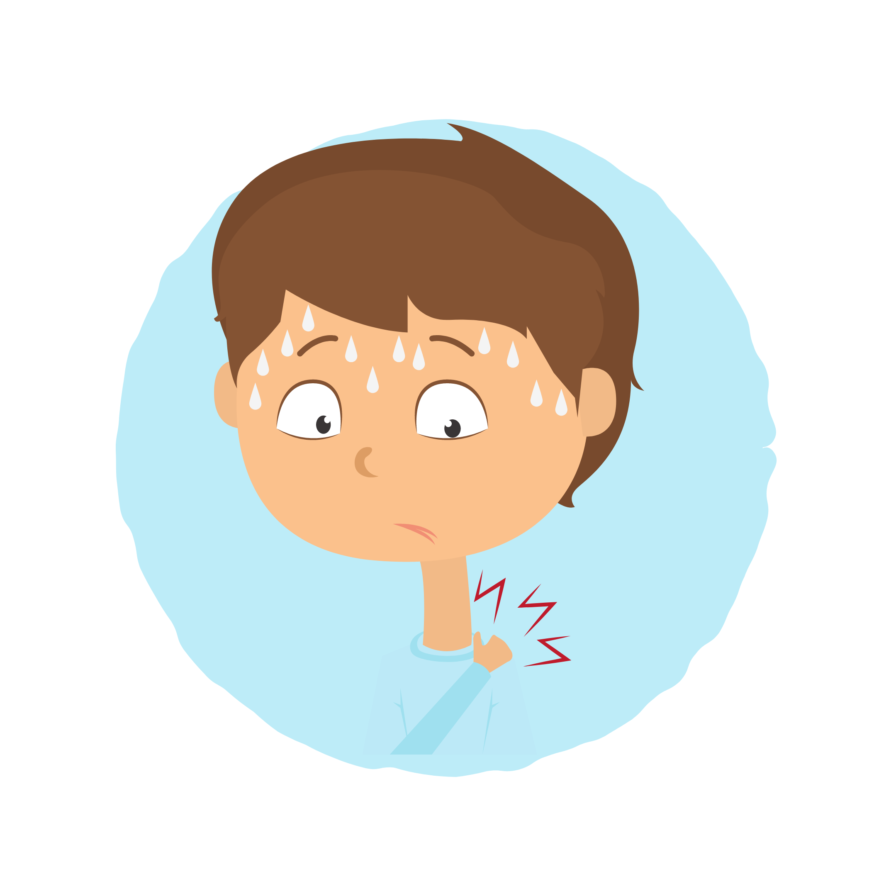
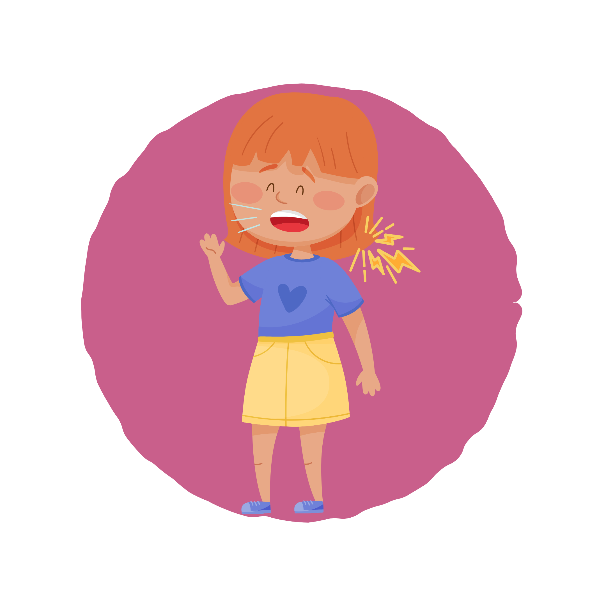

Torsión Testicular
Cordón espermático sufre una torsión, afectando los vasos sanguíneos de sumisnitran oxígeno.

Criptorquidia
Testículos no descendidos, una de las anomalías congénitas más frecuentes.

Estenosis Pilórica
Estrechamiento del píloro, una válvula muscular que está en la base del estómago.

Reflujo Gastroesofágico
El contenido gástrico o reflujo regresa hacia el esófago.

Circuncisión
Se retira el prepucio (piel que recubre el extremo del pene).

Colecistectomía
Procedimiento quirúrgico para extirpar la vesícula biliar.

Apendicitis
Procedimiento quirúrgico para extirpar la vesícula biliar.

Adenoamigdalectomía
Procedimiento quirúrgico para extirpar las amígdalas y adenoides.